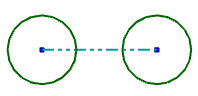

adaptive shell
Shelled body created in History-free mode. The body consists of a wall thickness value and a collection of shell relations between its selected shell faces and its partner faces.
associativity
Relationships between individual portions of a model. Changes to the parent are propagated to the children.
blend
Feature which creates convex or concave rounded transitions between the faces of a body.
pattern
(Drafting) Drafting objects such as borders, lines, text, or title blocks that can be saved and recalled.
(Modeling) Array of features or geometry.
reference curve
Also called a reference line.
Curve that is used for constraining geometry but is not used in the section when creating features. Reference curves are displayed as dashed lines. Curves in a sketch can be converted to and from reference curves.

Timestamp Order
Viewing mode in the Part Navigator where features are listed in creation order.